Scan Date: 2026-08-25
Head_Shoulder Confidence: 55.02%
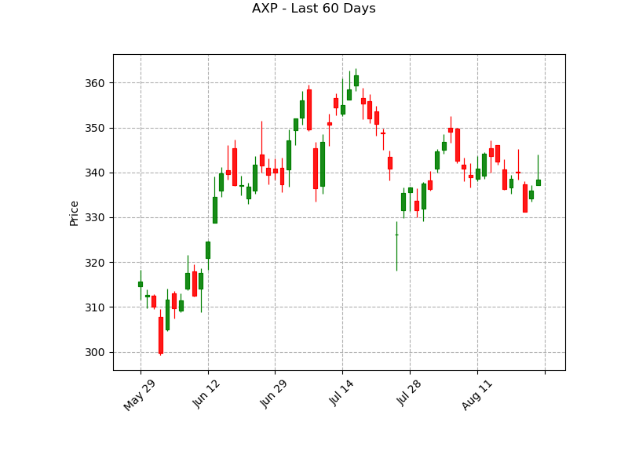
Head_Shoulder Confidence: 50.46%
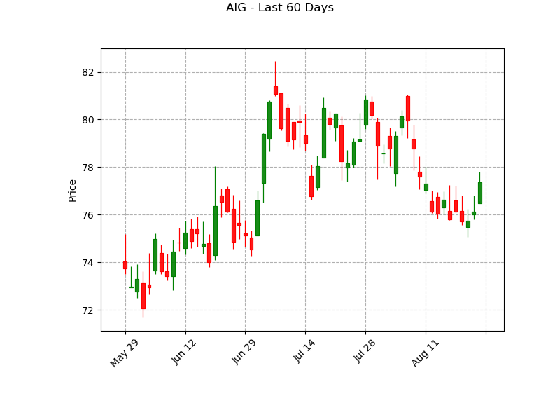
W_Bottom Confidence: 52.70%
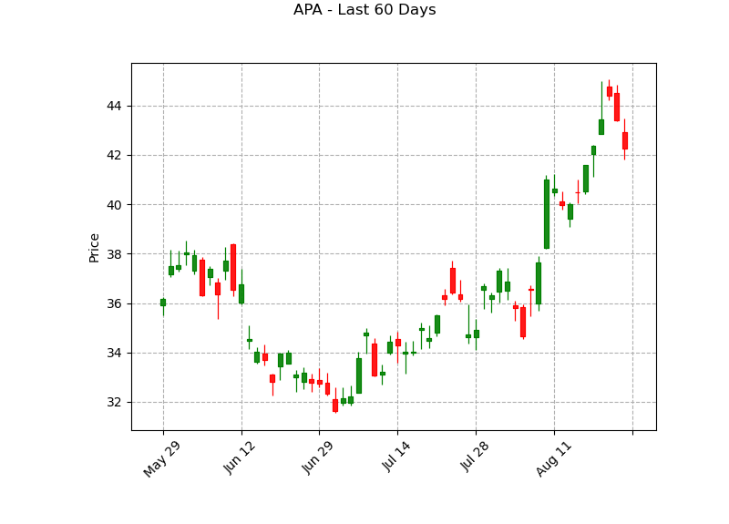
Head_Shoulder Confidence: 51.29%
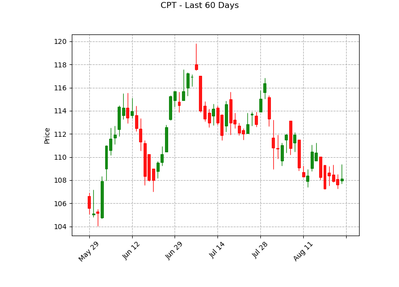
Head_Shoulder Confidence: 56.02%
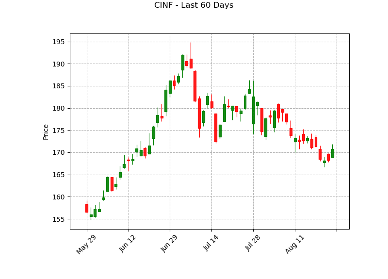
W_Bottom Confidence: 52.67%
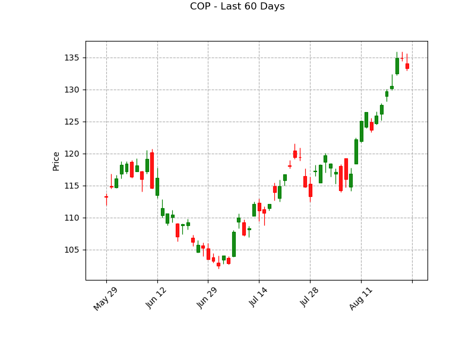
Head_Shoulder Confidence: 54.55%
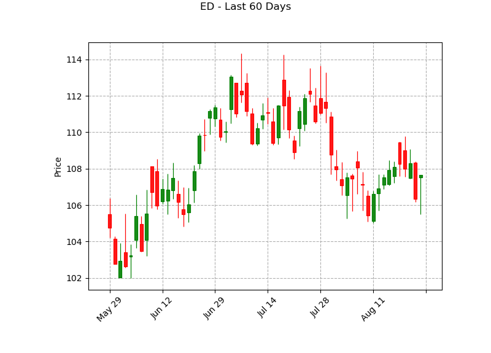
W_Bottom Confidence: 54.84%
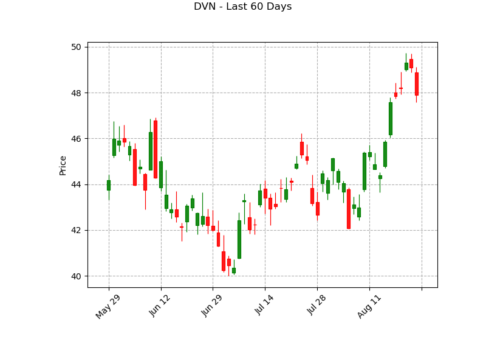
Head_Shoulder Confidence: 51.86%
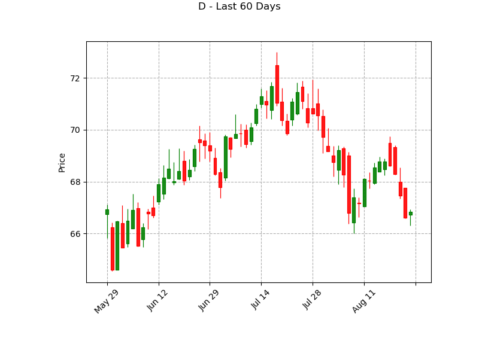
Head_Shoulder Confidence: 56.56%
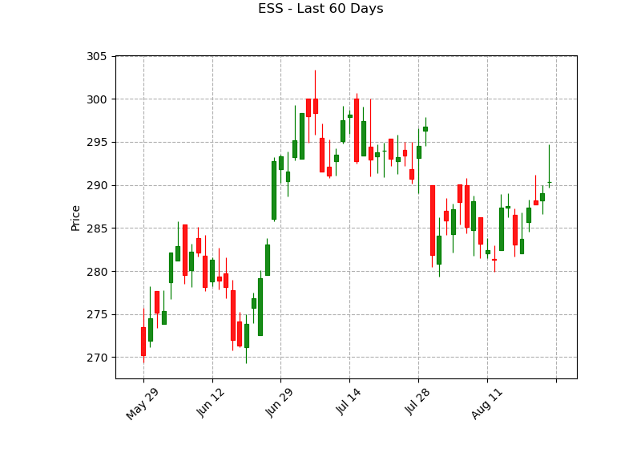
Head_Shoulder Confidence: 55.95%
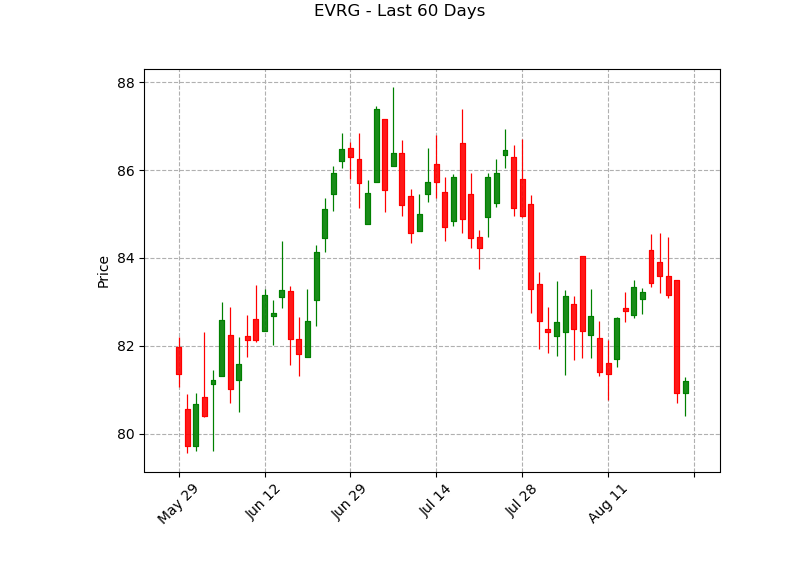
Head_Shoulder Confidence: 50.17%
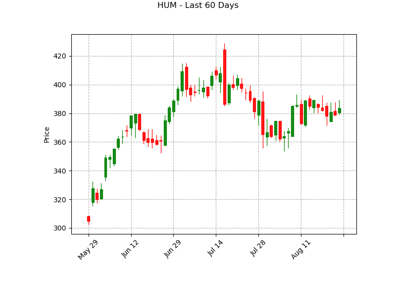
Head_Shoulder Confidence: 57.26%
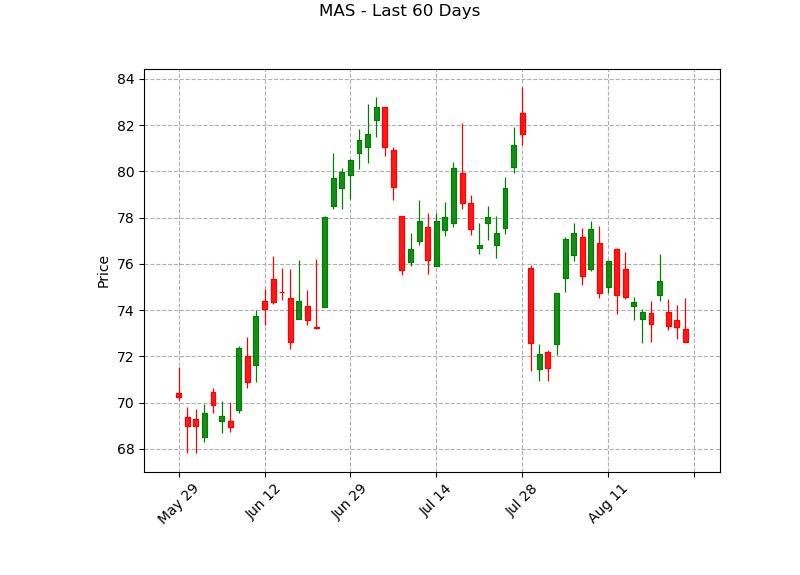
Head_Shoulder Confidence: 54.96%
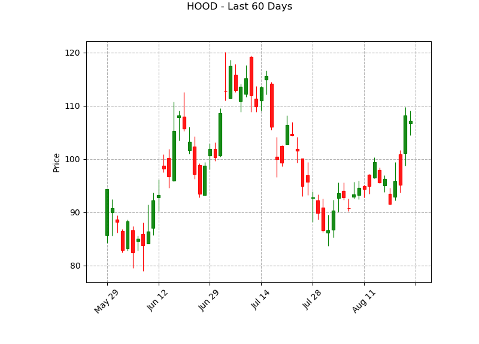
Head_Shoulder Confidence: 52.46%
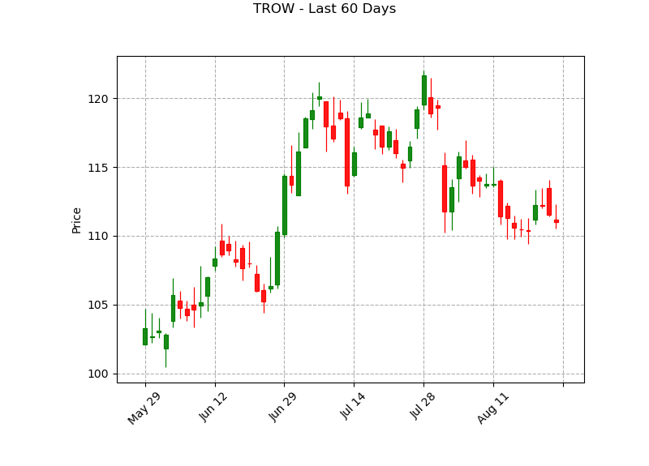
Head_Shoulder Confidence: 55.44%
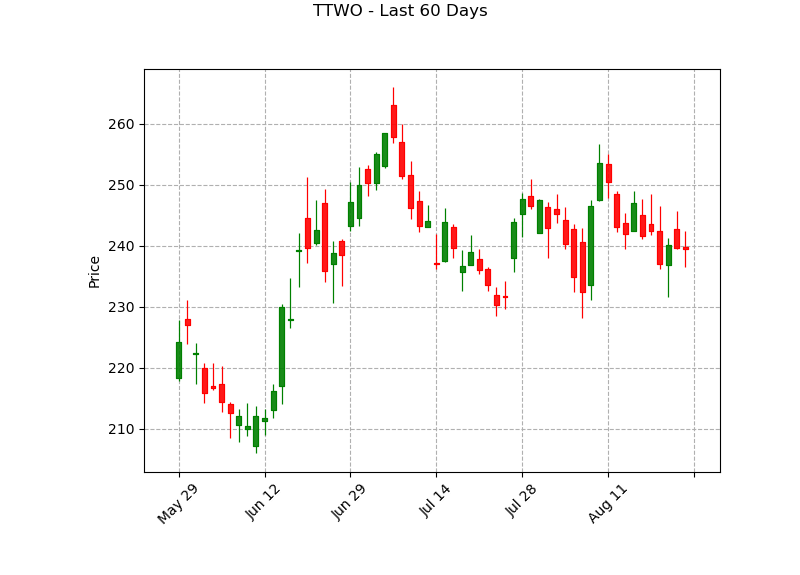
Head_Shoulder Confidence: 50.85%
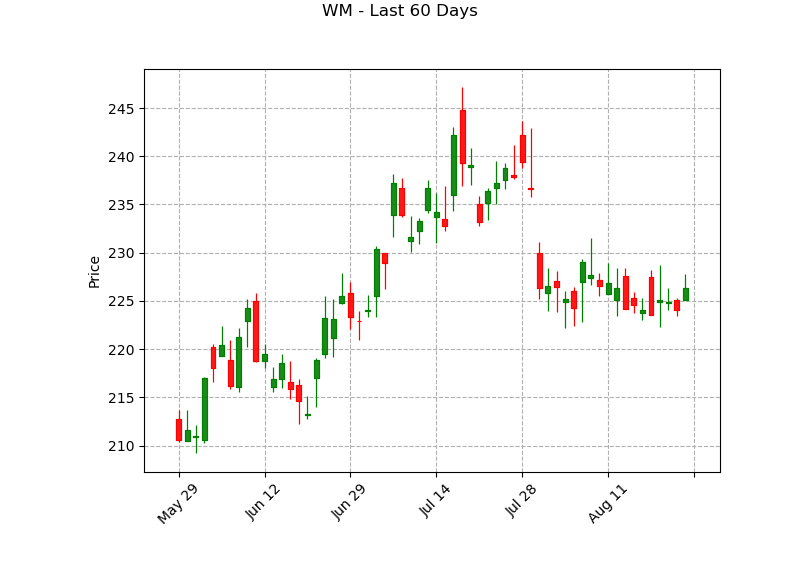
Head_Shoulder Confidence: 54.62%
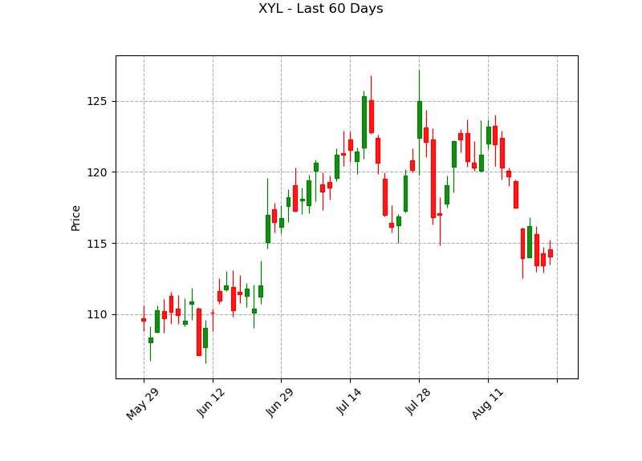